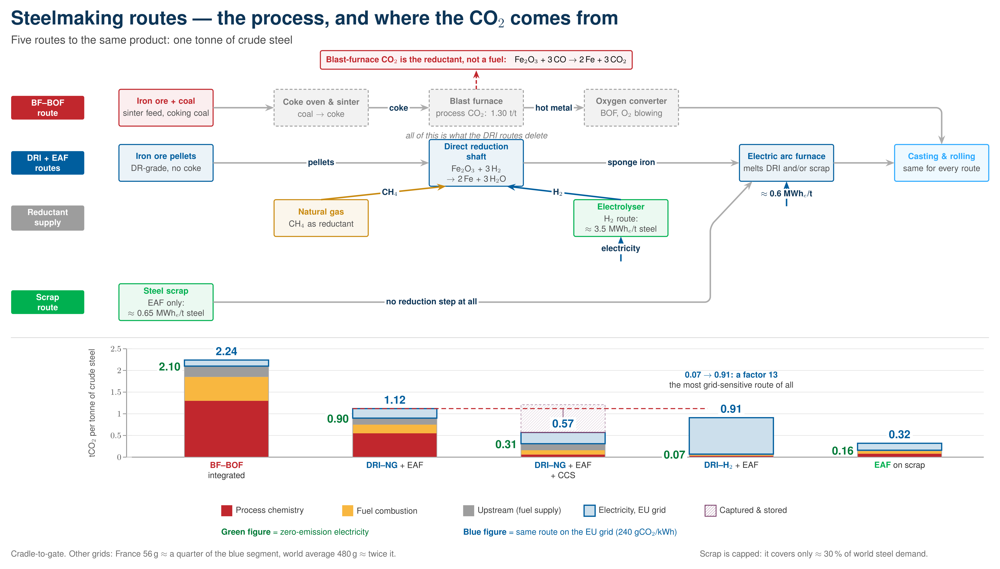
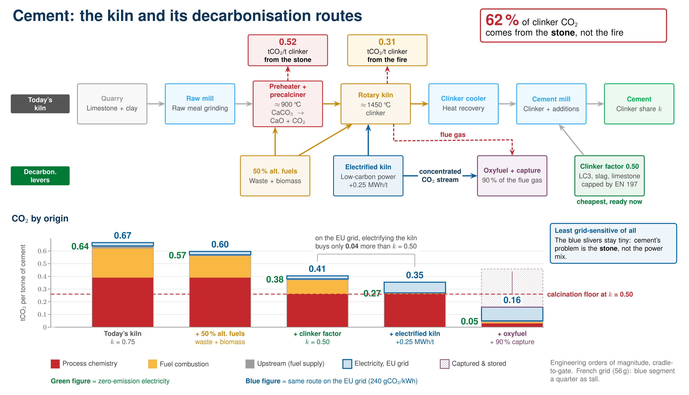
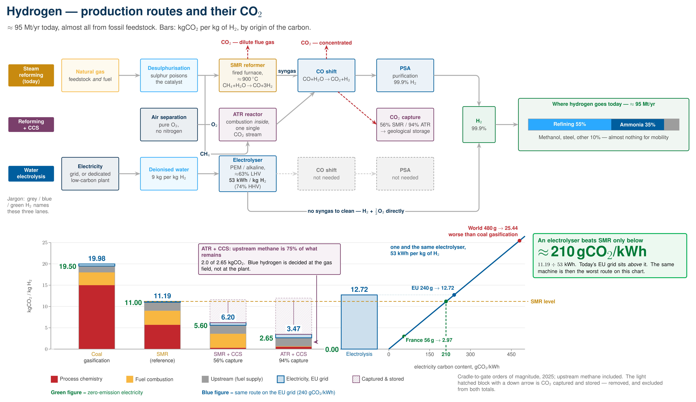
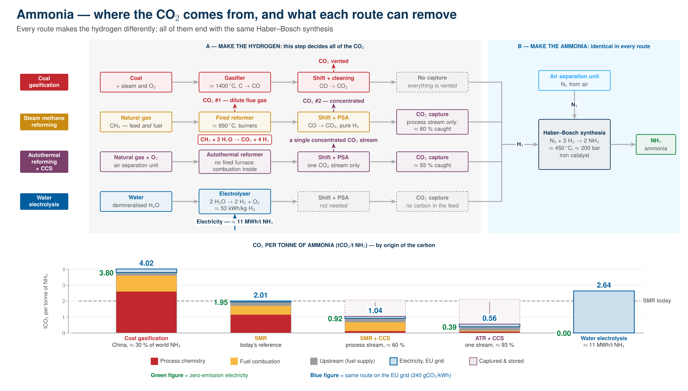
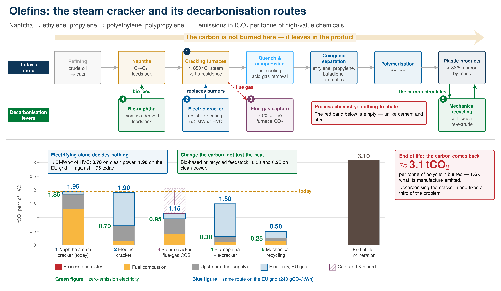
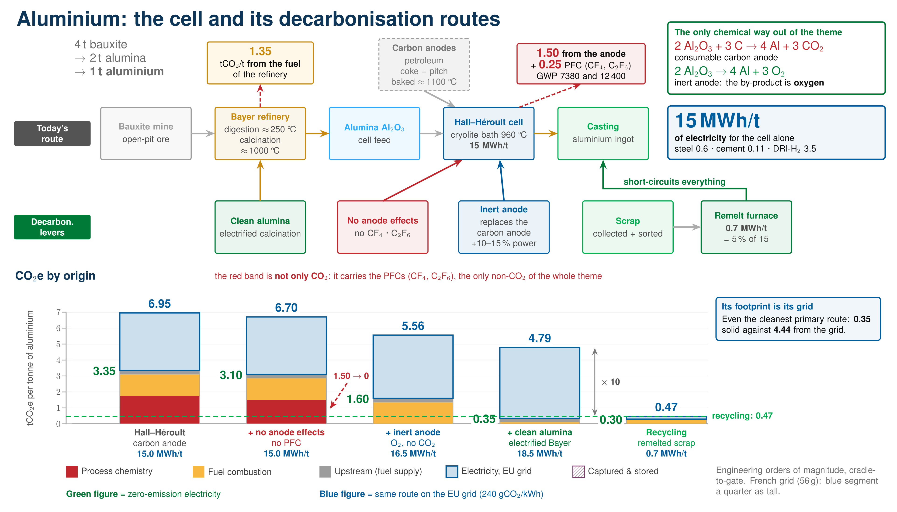

Décarboner l'acier, le ciment, l'hydrogène, l'ammoniac, les oléfines et l'aluminium : les routes et leurs émissions
Pour l'acier, le ciment, l'hydrogène, l'ammoniac, les oléfines et l'aluminium, les routes qui décarbonent le procédé d'aujourd'hui (hydrogène, électrification, captage, recyclage, moins de clinker) et ce qu'elles émettent par tonne, avec une planche par produit. Chaque route est évaluée sous deux électricités, sans émissions et réseau européen à 240 g : l'acier à l'hydrogène passe de 0,07 à 0,91 tCO₂/t, et l'électrolyse ne bat le vaporeformage que sous ≈ 210 gCO₂/kWh. Le CO₂ d'un combustible se remplace, celui de la chimie (calcaire, réducteur) non.
1. La question et la réponse
La question. Par quoi remplacer les procédés qui fabriquent l’acier, le ciment ou l’hydrogène, et combien émettrait chaque remplaçant ?
La réponse, en trois phrases. Pour chaque produit, il existe plusieurs routes de décarbonation : changer de combustible, changer de réaction (l’hydrogène à la place du charbon), électrifier, capter le CO₂, recycler. Une route électrique n’est bonne que si son électricité l’est : l’acier à l’hydrogène émet 0,07 t de CO₂ par tonne avec une électricité sans émissions, mais 0,91 t sur le réseau européen de 2023, presque autant que l’acier fait au gaz naturel. À l’inverse, le CO₂ du ciment sort de la pierre calcaire, et aucune électricité, si propre soit-elle, ne le supprime : il faut moins de clinker ou du captage.
Le plan. La section 2 apprend à lire les planches. Les sections 3 à 8 passent les produits un par un. La section 9 les compare, la section 10 dit ce que cela change pour les mini-projets, la section 11 ce qu’il faut retenir. Comment marchent les usines d’aujourd’hui : voir Les procédés industriels et leurs usines. Ce que coûte chaque route : voir Ce que coûte chaque route.
2. Lire une planche : deux électricités, quatre origines du CO₂
Une route est une façon de fabriquer le même produit. Chaque planche montre en haut le procédé d’aujourd’hui et ses remplaçants, en bas une barre d’émissions par route. Les émissions sont comptées du berceau à la sortie d’usine : l’usine, son énergie et l’amont de ses combustibles (extraction, transport, fuites de méthane). L’unité est la tonne de CO₂ par tonne de produit (tCO₂/t). Ce sont des ordres de grandeur d’ingénierie pour 2025 : ce qui compte est le rang des routes, pas la deuxième décimale.
Chaque route est évaluée deux fois, sur la même barre :
| Électricité | gCO₂/kWh | Sur la barre | Ce que ça dit |
|---|---|---|---|
| Sans émissions | 0 | partie pleine, total en vert | l’irréductible de la route |
| Réseau de l’Union européenne (UE-27), 2023 | 240 | extension bleue, total en bleu | ce que le réseau d’aujourd’hui ajoute |
Le segment bleu mesure la dépendance au réseau : la consommation d’électricité (MWh/t) fois 0,24 tCO₂/MWh. Le 0 g est une borne, pas un réseau réel (une éolienne émet environ 25 g par kWh sur son cycle de vie). Repères : la France à 56 g donne un segment quatre fois plus court, la moyenne mondiale à 480 g deux fois plus long. Le 240 g de 2023 baisse chaque année.
La partie pleine est empilée par origine du CO₂ :
- chimie du procédé (rouge) : le CO₂ produit par la réaction elle-même (calcaire, minerai de fer, méthane transformé en hydrogène) ;
- combustion (ambre) : un combustible fossile brûlé pour faire de la chaleur ;
- amont (gris) : l’extraction et le transport du combustible ;
- captage (prune hachuré, au-dessus de la barre) : le CO₂ capté et stocké sous terre, retiré des totaux.
La règle qui organise toute la note : ce qui vient du combustible se remplace ; ce qui vient de la chimie ne se remplace pas. Pour le supprimer, il faut changer de réaction, ou capter.
3. Acier : changer de réducteur

Dans un haut fourneau, le carbone du coke sert de réducteur : il arrache l’oxygène du minerai (Fe₂O₃ + 3 CO → 2 Fe + 3 CO₂). Sur 2,10 tCO₂ par tonne d’acier, 1,30 viennent de cette chimie. Changer de combustible n’y touche pas ; changer de réducteur, si.
D’où la réduction directe (DRI, direct reduced iron) : le minerai est réduit à l’état solide par du gaz naturel ou par de l’hydrogène, puis fondu dans un four à arc électrique (FEA). Avec l’hydrogène, la réaction rejette de l’eau (Fe₂O₃ + 3 H₂ → 2 Fe + 3 H₂O).
| Route | Électricité à 0 g | Réseau UE | Électricité (MWh/t) |
|---|---|---|---|
| Haut fourneau et convertisseur (BF-BOF) | 2,10 | 2,24 | 0,6 |
| DRI au gaz naturel + FEA | 0,90 | 1,12 | 0,9 |
| DRI au gaz + FEA + captage | 0,31 | 0,57 | 1,1 |
| DRI à l’hydrogène + FEA | 0,07 | 0,91 | 3,5 |
| FEA sur ferraille | 0,16 | 0,32 | 0,65 |
Le DRI à l’hydrogène est la route la plus conditionnelle de la planche : ses émissions sont multipliées par 13 entre les deux électricités. Sur le réseau UE, il fait à peine mieux que le DRI au gaz. Ses 3,5 MWh par tonne servent surtout à l’électrolyse de l’hydrogène : environ 55 kg d’H₂ par tonne de fer préréduit pour la réduction seule, environ 80 kg par tonne d’acier si le gaz réducteur est aussi réchauffé à l’hydrogène, 51 kg s’il l’est à l’électricité (Vogl et al., 2018). Le reste de 0,07 est le carbone ajouté au four à arc : un acier contient du carbone par définition.
La ferraille est la route la plus sobre, mais elle plafonne. Le stock de ferraille ne couvre qu’environ 30 % de la demande mondiale d’acier : on ne recycle pas un acier qui est encore dans un pont. Le four à arc fait d’ailleurs 28,6 % de l’acier mondial en 2023, à peine plus qu’en 1989 (worldsteel).
Plus loin, l’électrolyse directe du minerai (2 Fe₂O₃ → 4 Fe + 3 O₂) supprime le réducteur : même irréductible (0,07), 3,6 à 4,2 MWh par tonne, mais encore au stade pilote.
4. Ciment : le CO₂ sort de la pierre

Le ciment est fait de clinker, cuit à 1 450 °C à
partir de calcaire, et d’ajouts. Une tonne de clinker émet 0,83 tCO₂ :
0,52 de décarbonatation (CaCO₃ → CaO + CO₂) et 0,31 de
combustion. 62 % du CO₂ direct ne vient d’aucun
combustible. Le taux de clinker k
est la part de clinker dans le ciment ; on prend ici k =
0,75.
Les routes se cumulent, chaque ligne ajoute un levier à la précédente :
| Route (cumulée) | Électricité à 0 g | Réseau UE |
|---|---|---|
Four actuel, k = 0,75 |
0,64 | 0,67 |
| + 50 % de combustibles de substitution (déchets, biomasse) | 0,57 | 0,60 |
+ clinker réduit, k = 0,50 (argile calcinée,
laitier) |
0,38 | 0,41 |
| + four électrifié | 0,27 | 0,35 |
| + oxycombustion et captage de 90 % | 0,05 | 0,16 |
Le ciment est le produit le moins sensible au réseau
: les segments bleus restent minces. Son problème n’est pas
l’électricité, c’est la pierre. À k = 0,50, la
décarbonatation seule laisse un plancher de 0,26 tCO₂ par
tonne, tracé sur la planche : ni l’électrification ni un autre
combustible ne passent dessous. Seul le captage le fait.
Trois leviers, trois rôles :
- Baisser le taux de clinker est le levier le moins cher et disponible tout de suite. Avec les combustibles de substitution, il fait passer le ciment de 0,64 à 0,38 tCO₂ par tonne, soit −40 %. Il bute sur la norme européenne des ciments (EN 197), pas sur la technique.
- Électrifier le four n’apporte presque rien au CO₂ direct (de 0,41 à 0,35 sur le réseau UE, pour 0,25 MWh de plus par tonne). Son intérêt est ailleurs : sans air de combustion, les fumées ne sont plus diluées dans l’azote, et le CO₂ sort concentré, donc bien moins cher à capter. L’électrification du ciment prépare le captage, elle ne le remplace pas. Le captage lui-même : voir Capter le CO₂.
- Les combustibles de substitution gagnent moins qu’on ne le croit : à la cheminée, un pneu émet presque comme un charbon (85 contre 96 kgCO₂/GJ). Le gain vient du carbone d’origine biologique, compté à zéro par convention (WBCSD/CSI, 2016).
Idée reçue. « Une tonne de clinker, une tonne de CO₂ » : c’est 0,83. Le chiffre d’une tonne est celui de la chaux.
5. Hydrogène : « vert » est une propriété de l’électricité

Le monde consomme environ 97 Mt d’hydrogène par an (2023) : 44 % pour le raffinage du pétrole, 33 % pour l’ammoniac, 17 % pour le méthanol, 6 % pour l’acier, presque rien pour la mobilité (AIE, 2024). Il est fait surtout par vaporeformage du méthane (SMR, steam methane reforming) : CH₄ + 2 H₂O → CO₂ + 4 H₂. Le CO₂ est produit par construction, même avec un four parfait. Les usages et le coût de l’hydrogène : voir L’hydrogène : usages, production, coût.
| Route (kgCO₂/kg H₂) | Électricité à 0 g | Réseau UE |
|---|---|---|
| Gazéification du charbon | 19,50 | 19,98 |
| Vaporeformage (SMR) | 11,00 | 11,19 |
| SMR + captage du flux de procédé | 5,60 | 6,20 |
| Reformage autotherme (ATR) + captage de 94 % | 2,65 | 3,47 |
| Électrolyse | 0,00 | 12,72 |
L’électrolyse casse l’eau avec un courant : 53 kWh d’électricité par kg d’hydrogène, soit un rendement de 63 % sur le pouvoir calorifique inférieur. Sa barre n’a pas de partie pleine, elle n’est que du segment bleu.
Le nombre à retenir : environ 210 gCO₂/kWh (11,19 ÷ 53). En dessous, l’électrolyse bat le vaporeformage ; au-dessus, la même machine émet plus que le reformeur qu’elle remplace. Le réseau UE moyen, à 240 g, est au-dessus. Le même électrolyseur donne 2,97 kgCO₂/kg en France, 12,72 en Europe, 25,44 avec l’électricité mondiale moyenne : pire que le charbon. Le vocabulaire « gris, bleu, vert » attribue à la machine une propriété qui appartient à son électricité.
Le seuil monte à environ 230 g si les fuites de méthane de la chaîne gazière atteignent 1,5 % au lieu de 0,5 % (Bauer et al., 2022). Ces fuites sont aussi le talon d’Achille de l’hydrogène « bleu » (ATR + captage) : l’amont du méthane fait 2,0 des 2,65 kg restants, soit 75 %. Un hydrogène bleu se décide au champ gazier, pas à l’usine.
6. Ammoniac : l’hydrogène, encore

L’ammoniac (NH₃), base des engrais azotés, est fait d’hydrogène et de l’azote de l’air. Ses routes sont celles de l’hydrogène, avec un CO₂ de procédé de 1,15 t par tonne de NH₃ pour le vaporeformage : c’est la stœchiométrie, air compris.
| Route | Électricité à 0 g | Réseau UE |
|---|---|---|
| Gazéification du charbon (Chine) | 3,80 | 4,02 |
| Vaporeformage (SMR) | 1,95 | 2,01 |
| SMR + captage du flux de procédé (≈ 60 %) | 0,92 | 1,04 |
| ATR + captage (≈ 93 %) | 0,39 | 0,56 |
| Électrolyse | 0,00 | 2,64 |
Le meilleur et le pire procédé de la planche sont le même : l’électrolyse, avec ses 11 MWh par tonne de NH₃, passe de 0 à 2,64, au-dessus du vaporeformage. Seul le réseau les sépare.
Pourquoi passer du SMR à l’ATR. Un vaporeformeur a deux sorties de CO₂ : le flux de procédé, concentré et facile à capter, et les fumées du four, diluées dans l’azote de l’air et chères à capter. Le captage plafonne donc vers 60 %. Le reformage autotherme (ATR) fait la combustion à l’intérieur du réacteur, avec de l’oxygène pur : une seule sortie, concentrée, captée à environ 93 %.
7. Oléfines : le carbone part dans le produit

Les oléfines (éthylène, propylène) sont les briques des plastiques. On les fabrique en craquant du naphta (une coupe légère du pétrole) dans un vapocraqueur vers 850 °C. Les émissions sont comptées par tonne de HVC (high-value chemicals : éthylène, propylène, butadiène, aromatiques).
| Route | Électricité à 0 g | Réseau UE |
|---|---|---|
| Vapocraqueur au naphta | 1,85 | 1,95 |
| Craqueur électrique (≈ 5 MWh/t) | 0,70 | 1,90 |
| Vapocraqueur + captage des fumées (70 %) | 0,95 | 1,15 |
| Naphta biosourcé + craqueur électrique | 0,30 | 1,50 |
| Recyclage mécanique | 0,25 | 0,50 |
| Fin de vie : incinération | 3,10 |
La bande rouge est vide sur toutes les routes. Contrairement à l’acier et au ciment, le carbone du naphta ne devient pas du CO₂ à l’usine : il part dans le produit. Le polyéthylène est fait à 86 % de carbone.
Il revient en fin de vie. Incinérer une tonne de polyoléfine rend environ 3,1 tCO₂, plus d’une fois et demie ce qu’a coûté sa fabrication. Décarboner le craqueur ne traite donc qu’un tiers du problème. Et le craqueur électrique, sur le réseau UE, n’apporte rien : 1,90 contre 1,95. Seules les routes où le carbone circule (recyclage, biomasse, CO₂ capté comme matière première) ferment le bilan.
8. Aluminium : son empreinte est celle de son réseau

L’aluminium est obtenu par électrolyse de l’alumine dans un bain de cryolithe à 960 °C (procédé Hall-Héroult). La cuve consomme 15 MWh par tonne, un ordre de grandeur de plus que tous les autres produits de la note.
| Route (cumulée) | Électricité à 0 g | Réseau UE | MWh/t |
|---|---|---|---|
| Hall-Héroult, anode en carbone | 3,35 | 6,95 | 15,0 |
| + suppression des effets d’anode | 3,10 | 6,70 | 15,0 |
| + anode inerte | 1,60 | 5,56 | 16,5 |
| + alumine raffinée sans fossile | 0,35 | 4,79 | 18,5 |
| Recyclage (refonte de ferraille) | 0,30 | 0,47 | 0,7 |
Trois choses sont propres à l’aluminium :
- L’anode en carbone se consomme (2 Al₂O₃ + 3 C → 4 Al + 3 CO₂). L’anode inerte supprime ce carbone (2 Al₂O₃ → 4 Al + 3 O₂) : le sous-produit devient de l’oxygène, au prix de 10 à 15 % d’électricité en plus.
- La bande rouge n’est pas que du CO₂. Quand l’alumine du bain s’épuise, la cuve émet des gaz fluorés (PFC) au pouvoir de réchauffement très élevé : 7 380 fois celui du CO₂ pour le CF₄. Environ 0,25 tCO₂e par tonne dans une usine récente hors Chine, 0,8 en moyenne mondiale (IAI, 2023).
- Même la meilleure route primaire reste écrasée par son électricité : 0,35 d’irréductible, 4,44 ajoutés par le réseau UE. Avec l’électricité française, la cuve n’ajoute que 0,84 t.
Le recyclage ne demande que 5 % de l’énergie de la cuve. L’aluminium recyclé fournit déjà 36 % de l’offre mondiale (IAI, 2024).
9. Six produits côte à côte : ce que l’électrification déplace
| Produit, route | Électricité à 0 g → réseau UE | Facteur | Électricité |
|---|---|---|---|
| Hydrogène par électrolyse | 0,00 → 12,72 kg/kg | infini | 53 kWh/kg |
| Ammoniac par électrolyse | 0,00 → 2,64 | infini | 11,0 MWh/t |
| Aluminium primaire | 3,35 → 6,95 | × 2,1 | 15,0 MWh/t |
| Acier, DRI à l’hydrogène | 0,07 → 0,91 | × 13 | 3,5 MWh/t |
| Oléfines, craqueur électrique | 0,70 → 1,90 | × 2,7 | 5,0 MWh/t |
| Ciment, four électrifié | 0,27 → 0,35 | × 1,3 | 0,35 MWh/t |
Électrifier un procédé ne le décarbone pas en soi : cela transfère la question au système électrique. Les routes qui électrifient le plus (hydrogène, ammoniac, acier à l’hydrogène) sont celles qui exigent le plus un réseau déjà décarboné. Sur un réseau à 240 g, elles ne font pas mieux que les procédés qu’elles remplacent : d’abord l’électricité, ensuite l’électrification. Les mix électriques des pays : voir Le mix électrique de cinq pays.
Le facteur trompe, la consommation non. L’aluminium a un petit facteur (× 2,1) parce qu’il part de haut, mais c’est lui qui prend le plus au réseau en valeur absolue (+3,6 t par tonne). C’est la consommation d’électricité par tonne qui dit la dépendance au réseau, pas le rapport.
À l’inverse, aucun réseau ne règle le ciment : il a besoin de moins de clinker et de captage, pas d’électricité propre.
10. Ce que ça change pour les mini-projets du cours
Le prix du CO₂ qui fait changer l’industrie de procédé (cas H). Le modèle du cas choisit, produit par produit, la route la moins chère à un prix du CO₂ donné. Ce qu’une route évite par tonne fixe ce qu’elle gagne quand le CO₂ devient cher. Trois conséquences pour lire les résultats :
- L’acier hésite entre le captage et l’hydrogène. Le prix de l’électricité les départage : 3,5 MWh par tonne pour le DRI à l’hydrogène, 1,1 pour le DRI au gaz avec captage.
- Le clinker ne bascule que vers le captage : le plancher de décarbonatation ne se franchit pas autrement.
- Chaque bascule vers l’hydrogène crée une demande d’électricité, à reporter en TWh par an. Elle dépend de l’hydrogène par tonne : 51 ou 80 kg par tonne d’acier selon le réchauffage du gaz réducteur (section 3). Le CO₂ de cette électricité se joue dans le système électrique (section 9).
L’aciérie à réduction directe (cas K). L’aciérie choisit chaque heure entre hydrogène, gaz et gaz avec captage, trois lignes du tableau de la section 3. Une aciérie de 2 Mt par an entièrement à l’hydrogène consommerait environ 7 TWh par an (2 Mt × 3,5 MWh/t), une puissance moyenne proche de 1 GW, qui peut moduler. L’hypothèse de 80 ou de 55 kg d’H₂ par tonne change d’un tiers l’hydrogène à produire ; l’électricité change moins, car le réchauffage électrique du gaz ajoute environ 0,7 MWh par tonne. Une heure passée à l’hydrogène ne réduit le CO₂ que si l’électricité de cette heure est peu carbonée. Le prix de l’électricité heure par heure : voir Les marchés de l’électricité.
11. Ce qu’il faut retenir
L’origine du CO₂ décide de la route. Le CO₂ d’un combustible se remplace par une autre chaleur. Le CO₂ de la chimie (le réducteur de l’acier, le calcaire du ciment, le méthane de l’hydrogène) ne disparaît qu’en changeant de réaction ou en le captant.
Une route électrique vaut ce que vaut son électricité. L’électrolyse bat le vaporeformage sous environ 210 gCO₂/kWh, et le réseau européen de 2023 est au-dessus. L’acier à l’hydrogène passe de 0,07 à 0,91 tCO₂ par tonne entre une électricité propre et le réseau UE. Électrifier transfère le problème au système électrique.
Chaque produit a son verrou. L’acier : un réducteur sans carbone, et une ferraille qui ne couvre que 30 % de la demande. Le ciment : la pierre. L’ammoniac et l’hydrogène : l’électricité. Les oléfines : la fin de vie. L’aluminium : 15 MWh par tonne.
12. Sources
Les émissions par route sont des ordres de grandeur d’ingénierie pour 2025, du berceau à la sortie d’usine, cohérents entre les six produits. Les sources ci-dessous donnent les chiffres cités nommément ; les feuilles de route de la fin permettent de recouper les autres.
- AEE (Agence européenne pour l’environnement), Greenhouse gas
emission intensity of electricity generation in Europe, intensité
du réseau UE-27 en
- AIE, Global Hydrogen Review 2024 (consommation et usages de l’hydrogène).
- Bauer C. et al., « On the climate impacts of blue hydrogen production », Sustainable Energy & Fuels 6 (2022) 66-75, https://doi.org/10.1039/D1SE01508G (amont et fuites du gaz naturel).
- IAI (International Aluminium Institute), 2023 (effets d’anode, PFC) et fiche sur le recyclage, 2024 (part de l’aluminium recyclé, données 2022).
- Vogl V., Åhman M., Nilsson L.J., « Assessment of hydrogen direct reduction for fossil-free steelmaking », Journal of Cleaner Production 203 (2018) 736-745 (DRI à l’hydrogène avec réchauffage électrique).
- WBCSD / CSI, Getting the Numbers Right, 2016, données 2014 (émissions des combustibles de substitution des cimenteries).
- worldsteel, statistiques 2023 (part du four à arc électrique).
Pour aller plus loin :
- AIE, Iron and Steel Technology Roadmap, 2020.
- AIE et CSI, Technology Roadmap: Low-Carbon Transition in the Cement Industry, 2018.
- GCCA, Concrete Future: The GCCA 2050 Cement and Concrete Industry Roadmap for Net Zero Concrete, 2021.
- AIE, Ammonia Technology Roadmap, 2021.
- AIE, The Future of Petrochemicals, 2018.
13. Vidéos, billets et posts sur le même sujet
Des vidéos courtes, des billets de blog et des posts LinkedIn de l’auteur reprennent des points de cette note.
- Décarboner l’industrie lourde : la synthèse de 51 vidéos (post LinkedIn repris sur le blog, avec figures et sources ; le post sur LinkedIn) : les quatre leviers de l’industrie lourde (recycler, électrifier la chaleur, changer la chimie, capter) et leur condition : une électricité bas carbone.
- Acier 4/6 — l’hydrogène : le four existe déjà, et il tourne au méthane (vidéo, 2 min ; la série « Décarbonation de la fabrication de l’acier ») : la réduction directe du minerai de fer, qui tourne déjà au méthane et pourrait passer à l’hydrogène.
- Ciment 3b/4 — moins de clinker : le levier le moins cher, et ce qui le freine (vidéo, 2 min ; la série « Décarbonation de la fabrication du ciment ») : mettre moins de clinker dans le ciment : jusqu’où on peut descendre, et ce qui freine.
- Hydrogène 4b/5 — l’électrolyse : quand l’hydrogène est-il vraiment vert ? Le seuil des 210 g (vidéo, 3 min ; la série « Décarbonation de la fabrication de l’hydrogène ») : pourquoi un hydrogène d’électrolyse n’est « vert » que si son électricité émet moins de 210 g de CO₂ par kWh.
- Plastique 11/11 — défossiliser le plastique : ce qui ferme vraiment le bilan (vidéo, 3 min ; la série « Le plastique, de son histoire à sa décarbonation ») : ce que donne chaque solution pour faire du plastique sans carbone fossile.
- Aluminium 3/4 — l’anode inerte, la seule sortie chimique de l’industrie lourde (vidéo, 2 min ; la série « Décarbonation de la fabrication de l’aluminium ») : l’anode inerte, qui supprime le CO₂ de la cuve d’aluminium.
Télécharger la version PDF (les liens y restent actifs).